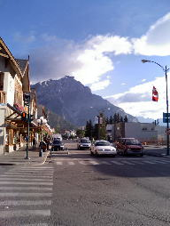
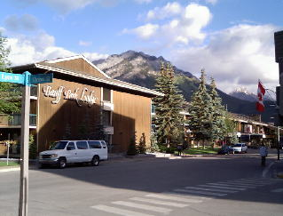
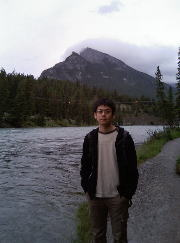

ICML2004のおもいで
オフィシャルまとめスライドはココ
学会誌に書いた報告はココとココ
- 2004/7/3 到着
- バンクーバーまでは8時間。8時間までなら耐えられると思った。
- ただしその後が長い。待ち時間2時間⇒カルガリーへ2時間⇒待ち時間2時間⇒バンフへ2時間（バス）
- 着いたら23時。眠いけど、壁に向かって喋る。
- バンフの街、せまりくる山が日本にはありえないかんじ

- 2004/7/4 １日目
- 一日目はチュートルアルと、カーネル関係をCOLTとICML全部集めたセッション。我々のはそのなかで発表
- 聞いた話
- 久しぶりにみたらメガネを掛けてインテリっぽくなっていた、ゲルトナのチュートリアル「Kernels for Structured Data」
- 構造データのカーネルを
- externally structured kernels: インスタンス同士の関係が構造として与えられるもカーネル。関係がグラフで表されるDifffusion
Kernelとかや、分布で表されるFisher Kernelなど
- internally structured kernels: Convolution Kernelsなど、インスタンス内の部分構造の積み重ねで定義されるカーネル
のふたつにグループわけして説明してるのは良かった。
- Kernels for hypergraph。行列Gがhypergraph上のノードのグルーピングを表す（g_{ij}
= node iがcluster(?) jに属するときに1、そうでないときに0をとる）として定義される場合に、その上でのWalkをGG'を使って歩く、すなはち、あるClusterから、あるClusterへの一歩が成立する条件はそれらが共通のノードを含むこと。そりゃできるだろうけど…まだやるのか！？
- ベイジアンネットワークにカーネルを使うはなし（COLT）
- VC次元がいくつだみたいな話だったのだが、どこの部分にどうカーネルが入ったのかわからずじまい。
- COLTは難しい…
- Sortingをカーネル化する話（COLT）
- 気になったけど、どこの部分がソートなのか理解できず、とにかくカーネルPCAと関係あるらしい。
- やっぱりCOLTは難しい…
- HMSVMの続きの話
- カーネルを混ぜる話（なんたらペーパーに選ばれた）
- いくつかのカーネル関数が与えられたときに、その混合比の和が１の制約のもとで、SVMをまとめて最適化する。
- 微分不可になるので、SMOがそのまま適用はできないが、正則化することで、できるようになる方法を提案してる気がする…。（わからない、要復習）
- グラフカーネルの拡張
- あるノードのまわりの情報を、ノードのラベルにとりこむ拡張と、ランダムウォークで引き返さない拡張の２つがあった。
- 自分の論文が説明され、土台になるさまは、感動的なものがあった。こうありたい。
- 自分の発表
- 内容は、流行りの構造間のマッピング学習（とくにラベリング問題）を、カーネル化した話。
カーネルCRFやHMSVMの続きと同じような話だが、これらと違うのが、あくまでconvolution kernel、つまり任意サイズのfeatureを多項式時間で扱えるカーネルを、この手の問題に導入ことを目標にした研究であるということ。
- セッションの中で最後の4番目だったのだが、「○○（不明）なので1番目とかわってくれ」と、HMSVMの彼に言われ交換。
おかげで聴衆の層が被っているゲルトナのチュートリアルと時間がかぶってしまったのはマイナス要因。
- それにしても、研究会に引き続き、またも、無反応でした。 おりしも朝、以前論文を送った先生からも遠まわしに「オマエの論文はわからん」というメールがとどいておりました…。
うーん、やはり何か問題があるはずだ。 記号？根本？確かに、ストーリーというか、差分がとてもわかりにくい気はする。
最近は、やはりCollinsのrankingから話をつなげたほうがいいような気がしている。
- ICMLの習慣で、夜にごはんを食べながら、全員ポスターセッションというのがあるのだが、これは良い習慣であると思う。自分に関係のあるひとと直接に話ができるし、向こうもこっちの話を聞く気でくるからちゃんと聞いてくれるし、質問もわからせようとしてくれる。イイ。ここではいろいろなひとと話ができた。
- 会った人、できごと、知ったこと
- 阿久津先生の研究室の助手の上田さんにあった。 いろいろ教えてもらい、会議を通じてずいぶんとお世話になった。
- ポスターセッションでVertさんと話した。初めて会った。自分でも忘れてた、説明が面倒で記述をごまかしてる部分を指摘してきた。
すごい。
- グラフカーネル拡張のFirstAuthorのピエーrreさんとも話せた。 お礼言い忘れた。
- ダンさんというワトソンで機械学習をやってるひとにあった。 威勢のいい人であった。
- イーワイに会った。 2年前の再会以来。そういえば「オネアミスの翼」は彼の家で初めて観たのだった。
彼はグラフィカルモデルの研究を続けているようだ、彼のやることは初めは意味がわからないけど、あとでけっこう面白いことが判明するのだ…。
- ニューヨークでPHDをやっている方に会った。 今度日本に来るらしいので、勉強会のゲストに誘っておいた。
- Googleのひとに会った。むちゃくちゃでか（太）かった。 ご飯タダだから？ちなみにご飯のときにGoogleケーキがあった。
写真撮っとけば良かったなあ。
- コロンビア大にGistというSVMの外付けカーネル可能のパッケージがあるらしい。
- 0/1のカーネルに使う関数、Dirac Functionといえばよいらしい。
- Lessons Learned
- アルゴリズムの名前がキャッチーなのは重要。 そして、ステップに名前をつける。
たとえば、KC(Kick & Chop)アルゴリズムならKステップとCステップに分ける。
- アナロジーで押せ。どうも皆、物理とのアナロジーとかに弱い。 わけのわからん演算子から、キルヒホッフ（高３）までよりどりみどり。
- 海外のVAIOは大きい
- 会場だったBanff Park Lodge。バンフの宿は大体こんなシルバニアファミリー風。

- 2004/7/5 ２日目
- 聞いた話
- Invited talk: コンピュータービジョンの人
- カメラで撮った映像から、人間の姿勢を抽出する話があった。 人間は、関節の角度など30変数以上でモデル化される。
- それぞれの肢が、画像としてどのように見えはずかというモデルをつかって、それぞれの肢を別々に検出すると誤りが多くなる。
- そこで、四肢がどのようにつながっているとか、人間の形についての制約をグラフの形でいれたグラフィカルモデルをつくり、全体をまとめてマッチングをとることで、性能が上がる。
- 角度の分布といえば、（ローカルで流行っている）vMF分布。 複数の角度に相関があるような場合の角度の確率分布って考えられるのだろうか
- カーネルで非線形次元削減の話（学生のベストペーパーのひとつ）
- 通常、カーネルPCAとかの次元削減では、空間中のデータを低次元の多様体に埋め込む。
- 変換前と変換後で、近傍の距離が保存されるような制約を入れつつ、変換後の（制約のない）点間の距離が最大になるようにする（丸まったネットをなるべくひっぱって床に広げようとする感じ！）と、半正定値計画法になる。
- やたらうまくいく。 面白そう。
- 教訓：とりあえず、なんでもいいからタスクを決めて、半正定値計画とかに持っていくとかっこよくていい感じ。
- 階層的なクラス分類のはなし
- ヤフーのカテゴリ分けを自動でやるような話。
- 単にマルチクラスでやったり、上から階層的に順番に分類していくのは、イマイチなので、一発でやるというのがかっこいいところ。
- エキスパートによる予測っぽい枠組みをつかって面白い定式化をしている。 クラスが階層構造をもっていて、ノードがひとつのクラスに対応。
階層の各ノードに線形分類器をおく。 ただし、あるノードの分類器の重みは、親ノードにある分類器の重みと似ているという制約をいれる。
- 損失としては、予測されたラベルと真のラベルの、木の上での距離、これと重みの制約の和を最小化するオンライン学習アルゴリズム。
- Yoram Singerは、今は、グー○ルにいるらしい。グー○ルは今回のICMLのスポンサーになっているが、
リクルーターをおくりこんでいるとのこと。
- サンプリングにバイアスのあるときの学習の話
- ワトソンのひとで、あべさんの同僚。
- データは必ずしも本来の分布に従ってサンプリングされない。 学者は、物理的に行きやすい場所の標本しかとれなかったり、ダイレクトメールを送る（＝サンプルをとる）人は、現在の分類器の性質に依存する。 その違いを推定して補正をする。
- L1ノルム対L2ノルム
- L1のほうが、データの次元に対し、本当の次元が小さいときに有効。 それは回転に対して不変でないから（要は軸の方向により大きくバイアスがかかる）。
- sample complexityがデータの次元に対し対数オーダであることを証明。 実験的に確かめた。
- L1のほうがスパースな解になるのは、みんな知ってることなのだろうけど、こういう視点はありそうで無かった気がする。
- 最小コストの決定木
- 誤分類コストだけでなく、属性をはかるコストがある場合の決定木学習。
- 学習は、単純に、まとめたコストを評価関数として使いながらスプリットしていく。
- そもそも、属性ついたコストが、regularizationの効果があり、プルーニングの必要が無いところが面白い。
- トイレ。前で手をふると手を拭く紙がにゅーとでてくる。 慣れるまでずいぶん手を振りまくった。
- 2004/7/6 ３日目
- 聞いた話
- ノーベル経済学賞のひとの話
- ジャンルとしては時系列のひとのようだ。80年代に条件付の時系列モデルみたいなものを考えたらしい。
- ARCH model：ht = w + Σj αj (yt-j - mt-j)2 これに線形和の項 Σj βt-j ht-jを加えたのがGARCH-modelというらしい。GARCH(1,1)は多くのfinancial assetsの良いモデルになっているらしい。へえー。
- 全体としては、さっぱりわからなかった。
- 偉いひとにもかかわらず、必要以上に丁重にあつかわないところは良いと思った。
- センサーネットワークで分散学習する問題（なんとかペーパー）
- 分散されたセンサーがデータを集めて、中央におくって予測するのではなく、センサーが予測し、その予測を集めて、それに基づいて最終的な予測を行う。
- 学習データは、全部そろっているとする。センサの予測する分布と、それを集めて予測するSVMを考え、損失を定義すると、センサのもつ分布と、SVMの重みのどちらかを固定すると、もう片方が凸になるので、順番に固定しながら局所解を発見する（最適解はそもそも無理）。
- ちなみに、センサ予測→中央の予測、から、入力→中央の予測、に変換する際、marginalized
kernelが出てくる。
- こういうセッティングの問題をちょっと考えていたので、ちょっと残念。
- 尚、今回、なんとかペーパーになってるやつは、確かに面白い。 よいものって、裾野が広いというか、そこに到達するための知識があまり無くても面白さを感じられるものなのだな、と思う。
- カーネルCRF
- 個人的に今日の最大の関心事
- CRFはカーネルで書ける。Representer theoremが成り立つ。つまり、
Σすべてのクリーク Σクリークへのすべてのラベル割り当て α(ラベル割り当て)×カーネル
の形で書ける。
- ただし、すべての割り当てが重みをもつので、ゲインを最大にする(クリーク＆ラベル割り当て)をグリーディに追加していくアプローチをとる。 クリークに対するラベル割り当ては素性に含まれる隠れ変数の数は固定しているので、数え上げられるとする。
- ポスターのときに、張り付いてずっとおんなじようなことを質問してたら、ちょっといやそうだった。
- CRFを高速学習の話
- CRFの勾配を、gradient boostingで推定したregression treeかなにかで近似するらしい。
- 大御所Dietterichだが、彼はコンスタントに学生を送り込んでくるのみならず、自分も必ず出してくる。
かっこいい。
- もちろん政治経済を行いながらなのは大変だろうけど、テクニカルな組織でリーダーとなる人はそうあるのが理想だなあ。
- グラフィカルモデルの推論のサンプリングを早くするはなし
- やっぱりイーワイのやってるのはいつも初めはさっぱりわからない。 でも、たいていあとで重要であるとわかる…。
- 会った人、できごと
- ゲルトナと情報交換の集い
- その前にご飯を食べてたときに一緒にいた彼の元ボスのFlachは、鎧が似合いそう。
話し方も将軍みたいでちょっと怖い。
- ゲルトナもKDDに通しているらしい。 しかもグラフカーネルで。 今回のはグラフカーネルというよりは、グラフをサイクルと木に分解して、bag
of cycles & treesのような表現にすると、グラフカーネルより性能は落ちるが、速くなります、という類の話らしい。
- 荒井さん（京大）、やいりさん（東大）にあった。 最近は大学も変化しているようで、大変なこともいろいろありそうだ。
- ICMLビジネスミーティング
- 今年、提出数がいくつで、どんな分布で、どれだけ通って、とか、お金をコレだけつかった、とかそういう報告と、今度どうやって行こう？みたいな話をする。
だれでも出られる。
- 毎年、伸び伸びになるくらい盛り上がるので結構楽しみ。 今年も、今年から試してみたdouble
blinded reviewの是非とかでずいぶん紛糾。
- ちなみに今回のICML参加者は４１５人。 会議にかかった費用は２０００万円弱くらいらしい。
一番お金がかかるのがご飯、半分弱くらいいってるみたい。 確かに、ケーキがやたら種類が多くてふんだん。
- 今年の提出数は368、（最終的に）受理されたのは118。 採択率32%くらい。
- カーネル（２０）＋SVM（１５）で３５本、あわせるとコレが一番多い。
- 分野ごとの受理率の統計もでていた。 カーネルは結構高い。やはり分野もちゃんと選ぶのが重要。
- 迷い馬の張り紙。ありえない。
- 2004/7/7 ４日目（自分的最終日）
- 最終日、明日はワークショップだけど、それには出ずに帰国。 さすがに電池切れそうだったけど、ポスターに最後の力を振り絞って参加
- 聞いた話
- Invited Talk: Gene Myers
- 彼がセレラでやった、シークエンシングの話にはじまり、ゲノム比較による遺伝子発見、最後にシステムバイオロジーの話に発展した。
- 「Sequencing By Hybiridizationってどうなん？」って聞かれて「役に立たない」って切り捨ててた。
- SVDを速くする話（なんとかペーパー）
- 速くなるだけじゃなくて領域も減る。 密な行列OK。
- ２次構造をグラフィカルモデルで予測する話
- 配列をセグメントするために、まず、セグメントを生成して、そのセグメントが配列を生成するような生成モデルを考える。
- いまやりたいことに似ている。
- ガウシアンプロセスで配列ラベリング（GPSC）
- アルたんを捕まえた！（発表に使った資料を送ってもらうのを約束。満足。）
- 雰囲気としては、kernel CRFは損失を、
尤度(exp(線形和)) + uniform prior
と仮定すると、representer theoremが成立する、つまりカーネル化される。 同様に、GPSCは、損失を、
尤度(任意の関数) + Gaussian prior
を仮定するとrepresenter theoremが成立する。
- モーメントカーネル
- Rational Kernelでやってた確率オートマトン同士のカーネルを、モーメント計算に拡張。
- これによってサブストリングの出現回数の期待値ではなく２乗とか３乗とかのモーメントが計算可能。
- これもグラフカーネルに関係しそうなのでわからないといけないが、いまのところわからない。
- 著者のひとりのCortes（ちなみに彼女はVapnikとともにSVMをつくった人）は、Googleに行ったらしい。
なんかAT&Tの受け皿になってる…。
- 荒井さんにRelational Reinforcement Learningの話を聞いた。
- 想像してたように、状態表現とかが１階述語論理で記述されるらしい。
- つまり、状態がグラフで書けるということで、グラフ→アクション→グラフという感じかなあ…。
- カーネルをつかったりできるわけだ。RRLに使えるんじゃないかな？（←どうやらゲルトナが去年やってたのはコレらしい…）
- 感想
- 今年のICMLはここ３年では一番面白かった気がする。
- なかなか会場でグリーディに活動するのは難しいが、それでも3回目になると、ほんのちょっとだけど、通りが良くなって居心地がよくなる。
いろいろやりたいことの方針もできた。
- さて、こうして数日間アカデミックな世界にどっぶりつかってみると、正気にかえる（あるいは逆に洗脳される）。
- explicitにしろimplicitにしろ、トップダウンな価値観が与えられる企業においては、その価値観に共感できない＝劣っているという感覚が大なり小なりある。
それは研究所であっても、そうだと思う。 そしてそれは理屈としては、それは正しいと思うし、そうでない企業の研究所は健全ではないと思う。
- ただ、ずっとそこにつかっていると、その価値観がいくつかあるうちのひとつであることを忘れてしまう。
というか、他にも価値観があることは頭で知ってるんだけど、つい、それが正しいと信じてしまう。
- たまに、実家に帰って他の道を行っている人と話をしたり、こういう感じでアカデミズムに触れる（触れすぎると今度はこっちの価値観に染まってしまい、これはこれで極端）のはそれをリセットする意味で重要であるとおもう。（ただし、価値観とかのまえに、これをやらないとご飯が食べられない！という切羽詰った状態でリセットするのは避けたい）
- 僕は会社の、とある制度（ある種の歪み？）を利用して会議に参加しているわけだが、テーマなんてなんでもいいから、論文通して毎年来たいとおもう。ICMLの難しさは、ちょうど良いとおもうので、そのくらいのクオリティを保っていこう、というちょうどいい目標だと思うし。（KDDになってしまうと、なんだか故郷に錦を飾るくらいの心持ちで苦しい。）
- 困っていること
- 帰りのバスにどこで乗るのかわからない(←どうやら、ホテルの前にきてくれるようだ)
- やいりさんとちょっとだけ河を散歩

- 2004/7/8 帰りの日。
- ワークショップには出ずに帰国。朝ごはんだけ会場で食べる。
- 帰りのバスでKernelCRFの女の子と一緒だった。 どうやらホテルが同じだったらしい。
バスで話をする。 発表につかった資料をもらうのを約束。
- バンクーバーからの飛行機の出発時間が遅れる。そのおかげかどうか、やたらイイ席。
途中で、雲の中から山脈が出てる（どこかはわからないけど、ロシアとアメリカのつなぎ目みたいなとこ？）のをみんなで見て機内一時大はしゃぎ。
- GPSC再考。
- やはりGPはなんのことやら不明、なので、途中の過程は無視して、出てきたものだけを見ることにする。
- CRFとの違いは、CRFがパラメータのuniform priorを仮定しているのに対し、パラメータのGaussian
priorを仮定して、MAP推定しているらしい。
- 効率的なアルゴリズムとして提案しているのは、結局のところ
- yt-yt+1featureについてはprimal表現、xt-ytfeatureについてはdual表現をしている（というかxtについてはカーネル行列を持つ）のに等価
- 例をひとつひとつ処理する(stochastic gradient descentっていうんだっけ？)
にすぎない気がする。
- KernelCRFの方は、クリーク選択のヒューリスティクスを考えました、という新規性がある気がするけど、こっちの解き方はあたりまえの気がするなあ…、
- むしろ、実は面白そうなのは、HMSVMの続きのほうだった。
- 正しい出力と誤った出力の間の損失Δを適当に定義してやると、２次計画のsoft
marginの制約のところ(≧1-ξ)を≧1-ξ/Δにすればよいらしいのだ
- これは、最近ちょっと考えてた枠組みを(discriminativeなケースにおいて)ある意味含まれちゃってる…。